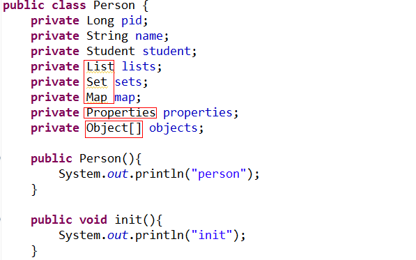

一种是配置文件的依赖注入（通过默认构造和set方法，或者通过init构造器）
首先，是基于默认构造器和set方法连用的依赖注入：


 关于properties类型，为键值对，都是字符串，可能为引用类型
关于properties类型，为键值对，都是字符串，可能为引用类型 对于数组，使用list来封装。
对于数组，使用list来封装。
使用构造器进行装配：

使用注解进行装配：


（4）需要为客户提供的bean。

总结：各层注解的名字不同，但是，功能相同：


一种是基于注解的依赖注入（只针对引用类型的变量。）
首先，是基于默认构造器和set方法连用的依赖注入：

下面这个类的实例，是person类的一个属性。
注意，装配，也就是依赖注入，是在init方法之前进行的。
首先在该类中，要提供set和默认的构造器。
然后，在配置文件中，对其进行装配：
关于properties类型，为键值对，都是字符串，可能为引用类型对于数组，使用list来封装。这样，就封装完毕了，然后，就是启动容器，获取对象向，调用对象了。
使用构造器进行装配：
注意框架创建对象，使用的默认构造器，这个一定要在代码中体现，不能创建的新的构造器，就没有了默认构造器。
在配置文件中，注意使用的标签。
使用注解进行装配：
也就是在属性上，加上注解，然后，通过属性的name的值，找到配置文件中的id，然后，就可以直接让容器创建对象。
首先，要导包：
使用注解的配置文件：
在配置文件中，引入命名空间：
这样，直接在类中，使用注解，就可以了.
1、启动spring容器
2、把person和student两个bean实例化
3、当spring容器解析到
<context:annotation- config></context:annotation-config>
就会启动依赖注入的注解解析器
4、spring容器会在纳入spring管理的bean的范围内查找,看这些类的哪些属性上加有@Resource注解
5、如果某一个属性上加有@Resource注解
会查看该注解的name属性的值是否为""
如果为"",则会把该注解所在的属性的名称和spring容器中的id的值作匹配，如果匹配成功，则赋值
如果匹配不成功，则按照类型进行匹配,匹配成功则赋值
如果再匹配不成功,则报错
如果不为"",则把该注解的name属性的值和spring容器中id的值作匹配，如果匹配成功，则赋值
如果匹配不成功,则直接报错
说明:
注解只能作用于引用类型
xml与注解的对比
xml的效率比较高，书写比较麻烦
注解的书写比较简单，效率比较低
启动注解解析器：
spring自己弄的注解
大体流程：
在person中，给属性加上注解：并且，注解只能给引用类型的变量，赋值，也就是说，Person中的student属性，通过注解给予赋值：
上面既然可以扫描属性，就一定可以扫描类，其目的就是不用在配置文件中，也bean标签了。
也就是说，在配置文件中，不用beam标签了。
然后：
第一个类：
第二个类：
最后，就是使用：
配置文件如下：
原理：
/**
* 原理
* 1、启动spring容器
* 2、spring容器解析
* <context:component-scan base-package="com.itheima10.spring.scan">
</context:component-scan>
3、在base -package指定的包及子包中扫描,看哪些类上面是否含有@Component注解
4、如果有该注解
@Component
public class Person {
}
==
<bean id="person" class="..Person">
@Component("aa")
public class Person {
}
==
<bean id=" aa" class="..Person">
5、按照@Resource的解析步骤执行
说明：
整个过程扫描两次，效率越来越低，书写越来越简单
注：在配置文件中，就不用写bean这个标签了，因此既然可以扫描到注解，就一定知道类的全名，框架就一定可以new出这个对象的。哈哈哈，给类打上印记，还能找不到？？可笑。
使用注解，进行依赖注入的另外两个例子：
使用注解的方式，修改 document文件管理系统：
（1）弄好spring的配置文件：
<?xml version= "1.0" encoding ="UTF-8"?>
<beans xmlns="http://www.springframework.org/schema/beans"
xmlns:context="http://www.springframework.org/schema/context"
xmlns:xsi="http://www.w3.org/2001/XMLSchema-instance"
xsi:schemaLocation="http://www.springframework.org/schema/beans
http://www.springframework.org/schema/beans/spring-beans-2.5.xsd
http://www.springframework.org/schema/context
http://www.springframework.org/schema/context/spring-context-2.5.xsd">
<context:component-scan base-package="com.itheima10.spring.iocdi.document" >
</context:component-scan >
</beans>
（2）总接口：
public interface Document {
public void read();
public void write();
}
（3）各种实现接口的具体实现类，使用了类注解，这样就不用在配置文件中写bean标签了。
第一个实现类：
@Component("excelDocument" )
public class ExcelDocument implements Document{
public void read() {
System. out.println("excel read" );
}
public void write() {
System. out.println("excel write" );
}
}
第二个实现类：
@Component("pdfDocument" )
public class PDFDocument implements Document{
public void read() {
System. out.println("pdf read" );
}
public void write() {
System. out.println("pdf write" );
}
}
（4）需要为客户提供的bean。
（5）测试类：
用注解来修改 MVC
（1）dao层：注意该层的注解的类型：
@Repository("personDao" )
public class PersonDaoImpl implements PersonDao{
public void savePerson() {
System. out.println("save person" );
}
}
（2）service层：该层类的注解为@Service ("personService" )，该层的注入使用的注解为：@Resource(name= "personDao" )
@Service("personService" )
public class PersonServiceImpl implements PersonService{
@Resource(name= "personDao")
private PersonDao personDao;
public void savePerson() {
this.personDao .savePerson();
}
}
（3）controller层使用的注解为：@Controller ("personAction" )
@Controller("personAction" )
public class PersonAction {
@Resource(name= "personService")
private PersonService personService;
public void setPersonService(PersonService personService) {
this.personService = personService;
}
public void savePerson(){
this.personService .savePerson();
}
}
最后的测试层为：
public class MVCTest {
@Test
public void testMVC(){
ApplicationContext context =
new ClassPathXmlApplicationContext("applicationContext.xml" );
PersonAction personAction = (PersonAction)context.getBean("personAction" );
personAction.savePerson();
}
总结：各层注解的名字不同，但是，功能相同：
控制层
业务层
dao层
类中对引用类型赋值的注解：
普通类的注解：
目的是配置文件中，不使用 bean标签。